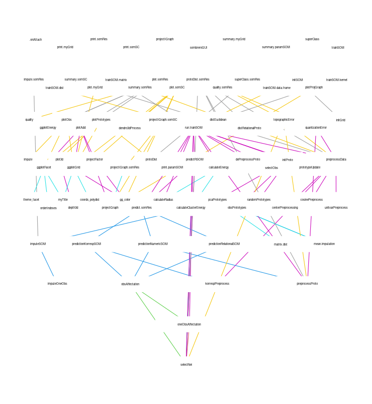

SOMbrero Package description
03 janvier, 2022
Source:vignettes/a-doc-SOMbrero-package.Rmd
a-doc-SOMbrero-package.Rmd
Package description
SOMbrero (‘Self Organizing Maps Bound to Realize Euclidean and Relational Outputs’) implements several variants of the stochastic Self-Organising Map algorithm and is able to handle numeric and non numeric data sets (contingency tables, graphs or any ‘relational’ data described by a dissimilarity matrix).
See help(SOMbrero) for further details.
Numeric SOM
The numeric SOM is illustrated on the well-known iris data set. This data describe iris flowers with 4 numeric variables (Sepal.Length, Sepal.Width, Petal.Length and Petal.Width) and a fifth variable (not used to train the SOM) is the flower species. This example is processed in the numeric SOM guide.
Contingency tables
The SOM algorithm provided by the package SOMbrero can also handle some non-numeric data. First, data described by contingency tables, which can be processed using the ‘korresp’ algorithm (see Cottrell et al., 2004, 2005). This case is illustrated on the presidentielles2002 dataset, which contains the number of votes in the first round of the French 2002 presidential election, for each of the French administrative departments (row variables) and each of the candidates (column variables). This example is used in the korresp user guide.
Dissimilarity matrices
Data described by a dissimilarity matrix can also be processed by SOMbrero as described in Olteanu et al., 2015a. This case is illustrated on a data set extracted from the novel Les Miserables, written by the French author Victor Hugo and published during the XIXth century. This dataset provides a dissimilarity matrix between the characters of the novel, based on the length of shortest paths in a network defined from the novel. This example is provided in the relational user guide.
For those who have an R developer soul, and who want to help improve this package, the following picture provides an overview the current arborescence of the package:

Session information
This vignette has been computed with the following environment:
## R version 4.1.2 (2021-11-01)
## Platform: x86_64-pc-linux-gnu (64-bit)
## Running under: Ubuntu 20.04.3 LTS
##
## Matrix products: default
## BLAS: /usr/lib/x86_64-linux-gnu/blas/libblas.so.3.9.0
## LAPACK: /usr/lib/x86_64-linux-gnu/lapack/liblapack.so.3.9.0
##
## locale:
## [1] LC_CTYPE=en_US.UTF-8 LC_NUMERIC=C
## [3] LC_TIME=fr_FR.UTF-8 LC_COLLATE=en_US.UTF-8
## [5] LC_MONETARY=fr_FR.UTF-8 LC_MESSAGES=en_US.UTF-8
## [7] LC_PAPER=fr_FR.UTF-8 LC_NAME=C
## [9] LC_ADDRESS=C LC_TELEPHONE=C
## [11] LC_MEASUREMENT=fr_FR.UTF-8 LC_IDENTIFICATION=C
##
## attached base packages:
## [1] stats graphics grDevices utils datasets methods base
##
## other attached packages:
## [1] SOMbrero_1.4-1 markdown_1.1 igraph_1.2.10
##
## loaded via a namespace (and not attached):
## [1] tidyselect_1.1.1 xfun_0.24 bslib_0.3.1
## [4] purrr_0.3.4 colorspace_2.0-2 vctrs_0.3.8
## [7] generics_0.1.0 htmltools_0.5.2 yaml_2.2.1
## [10] utf8_1.2.2 rlang_0.4.11 pkgdown_2.0.1
## [13] jquerylib_0.1.4 pillar_1.6.2 glue_1.4.2
## [16] DBI_1.1.1 lifecycle_1.0.0 metR_0.11.0
## [19] stringr_1.4.0 munsell_0.5.0 gtable_0.3.0
## [22] ragg_1.2.1 memoise_2.0.1 evaluate_0.14
## [25] ggwordcloud_0.5.0 knitr_1.33 fastmap_1.1.0
## [28] fansi_0.5.0 Rcpp_1.0.7 backports_1.2.1
## [31] checkmate_2.0.0 scales_1.1.1 cachem_1.0.6
## [34] desc_1.4.0 scatterplot3d_0.3-41 jsonlite_1.7.2
## [37] deldir_1.0-6 systemfonts_1.0.3 fs_1.5.0
## [40] interp_1.0-33 textshaping_0.3.6 ggplot2_3.3.5
## [43] png_0.1-7 digest_0.6.27 stringi_1.6.2
## [46] dplyr_1.0.7 grid_4.1.2 rprojroot_2.0.2
## [49] tools_4.1.2 magrittr_2.0.1 sass_0.4.0
## [52] tibble_3.1.3 crayon_1.4.1 pkgconfig_2.0.3
## [55] ellipsis_0.3.2 data.table_1.14.0 lubridate_1.7.10
## [58] assertthat_0.2.1 rmarkdown_2.10 R6_2.5.1
## [61] compiler_4.1.2